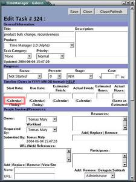
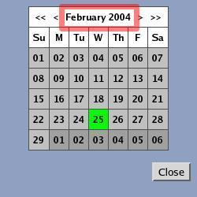
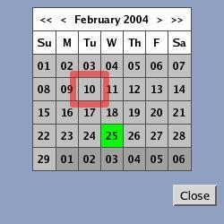

The calendar provides a way to set dates visually, such as when you know the day of the week, etc... without knowing (nor wanting to know) the exact numerical date.
Next to any date field, there should be a button that says 'Calendar' or 'Set'. Clicking on it opens a window that will put a date into that field.
By clicking on the month/year date (in between the navigational arrows), one can quickly go back to this day's month. Today will show up in a different color than every other day.
By clicking on a day in the calendar, you will then have the date field in the other window be set. To close the calendar window, click on 'Close'.
